public class Book {
private String isbn;
private String title;
...
}
This chapter describes the Java API for RESTful web services (JAX-RS, defined in JSR331). RESTEasy is an portable implementation of this specification which can run in any Servlet container. Tight integration with JBoss Application Server is available for optimal user experience in that environment. While JAX-RS is only a server-side specification, RESTeasy has innovated to bring JAX-RS to the client through the RESTEasy JAX-RS Client Framework.
Detailed documentation on RESTEasy is available here.
The source for this tutorial is in github repository git://github.com/tdiesler/javaee-tutorial.git
OpenShift, is a portfolio of portable cloud services for deploying and managing applications in the cloud. This tutorial shows how to deploy a RESTful web service on the free OpenShift Express JavaEE cartridge that runs JBossAS 7.
An application running on Android shows how to leverage JBoss technology on mobile devices. Specifically, we show how use the RESTEasy client API from an Android device to integrate with a RESTful service running on a JBossAS 7 instance in the cloud.
The following topics are addressed
What are RESTful web services
Creating a RESTful server endpoint
Deploying a RESTful endpoint to a JBossAS instance in the cloud
RESTEasy client running on an Android mobile device
This section is still under development.
RESTful web services are designed to expose APIs on the web. REST stands for Representational State Transfer. It aims to provide better performance, scalability, and flexibility than traditinoal web services, by allowing clients to access data and resources using predictable URLs. Many well-known public web services expose RESTful APIs.
The Java 6 Enterprise Edition specification for RESTful services is JAX-RS. It is covered by JSR-311 (http://jcp.org/jsr/detail/311.jsp). In the REST model, the server exposes APIs through specific URIs (typically URLs), and clients access those URIs to query or modify data. REST uses a stateless communication protocol. Typically, this is HTTP.
The following is a summary of RESTful design principles:
A URL is tied to a resource using the @Path annotation. Clients access the resource using the URL.
Create, Read, Update, and Delete (CRUD) operations are accessed via PUT, GET, POST, and DELETE requests in the HTTP protocol.
PUT creates a new resource.
DELETE deletes a resource.
GET retrieves the current state of a resource.
POST updates a resources's state.
Resources are decoupled from their representation, so that clients can request the data in a variety of different formats.
Stateful interactions require explicit state transfer, in the form of URL rewriting, cookies, and hidden form fields. State can also be embedded in response messages.
A RESTful endpoint is deployed as JavaEE web archive (WAR). For this tutorial we use a simple library application to manage some books. There are two classes in this application:
Library
Book
The Book is a plain old Java object (POJO) with two attributes. This is a simple Java representation of a RESTful entity.
public class Book {
private String isbn;
private String title;
...
}
The Library is the RESTful Root Resource. Here we use a set of standard JAX-RS annotations to define
The root path to the library resource
The wire representation of the data (MIME type)
The Http methods and corresponding paths
@Path("/library")
@Consumes({ "application/json" })
@Produces({ "application/json" })
public class Library {
@GET
@Path("/books")
public Collection<Book> getBooks() {
...
}
@GET
@Path("/book/{isbn}")
public Book getBook(@PathParam("isbn") String id) {
...
}
@PUT
@Path("/book/{isbn}")
public Book addBook(@PathParam("isbn") String id, @QueryParam("title") String title) {
...
}
@POST
@Path("/book/{isbn}")
public Book updateBook(@PathParam("isbn") String id, String title) {
...
}
@DELETE
@Path("/book/{isbn}")
public Book removeBook(@PathParam("isbn") String id) {
...
}
}
The Library root resource uses these JAX-RS annotations:
|
Annotation |
Description |
|
@Path |
Identifies the URI path that a resource class or class method will serve requests for |
|
@Consumes |
Defines the media types that the methods of a resource class can accept |
|
@Produces |
Defines the media type(s) that the methods of a resource class can produce |
|
@GET |
Indicates that the annotated method responds to HTTP GET requests |
|
@PUT |
Indicates that the annotated method responds to HTTP PUT requests |
|
@POST |
Indicates that the annotated method responds to HTTP POST requests |
|
@DELETE |
Indicates that the annotated method responds to HTTP DELETE requests |
For a full description of the available JAX-RS annotations, see the JAX-RS API documentation.
To package the endpoint we create a simple web archive and include a web.xml with the following content
AS7-1674 Remove or explain why web.xml is needed for RESTful endpoints
<web-app version="2.4" xmlns="http://java.sun.com/xml/ns/j2ee"
xmlns:xsi="http://www.w3.org/2001/XMLSchema-instance"
xsi:schemaLocation="http://java.sun.com/xml/ns/j2ee http://java.sun.com/xml/ns/j2ee/web-app_2_4.xsd">
<servlet-mapping>
<servlet-name>javax.ws.rs.core.Application</servlet-name>
<url-pattern>/*</url-pattern>
</servlet-mapping>
</web-app>
The root context is defined in jboss-web.xml
<jboss-web> <context-root>jaxrs-sample</context-root> </jboss-web>
The code for the JAX-RS part of this tutorial is available on https://github.com/tdiesler/javaee-tutorial/tree/master/jaxrs. In this step we clone the repository and build the endpoint using maven. There are a number of JAX-RS client tests that run against a local JBossAS 7 instance. Before we build the project, we set the JBOSS_HOME environment variable accordingly.
Arquillian, the test framework we use throughout this tutorial, can manage server startup/shutdown. It is however also possible to startup the server instance manually before you run the tests. The latter allows you to look at the console and see what log output the deployment phase and JAX-RS endpoint invocations produce.
$ git clone git://github.com/tdiesler/javaee-tutorial.git Cloning into javaee-tutorial... $ cd javaee-tutorial/jaxrs $ export JBOSS_HOME=~/workspace/jboss-as-7.0.1.Final $ mvn install ... [INFO] ------------------------------------------------------------------------ [INFO] Reactor Summary: [INFO] [INFO] JavaEE Tutorial - JAX-RS .......................... SUCCESS [1.694s] [INFO] JavaEE Tutorial - JAX-RS Server ................... SUCCESS [2.392s] [INFO] JavaEE Tutorial - JAX-RS Client ................... SUCCESS [7.304s] [INFO] ------------------------------------------------------------------------ [INFO] BUILD SUCCESS [INFO] ------------------------------------------------------------------------ [INFO] Total time: 12.142s
First we need to create a free OpenShift Express account and select the JavaEE cartridge that runs JBossAS 7. Once we have received the confirmation email from OpenShift we can continue to create our subdomain and deploy the RESTful endpoint. A series of videos on the OpenShift Express page shows you how to do this. There is also an excellent quick start document that you have access to after login.
For this tutorial we assume you have done the above and that we can continue by creating the OpenShift application. This step sets up your JBossAS 7 instance in the cloud. Additionally a Git repository is configured that gives access to your deployed application.
$ rhc-create-app -a tutorial -t jbossas-7.0
Password:
Attempting to create remote application space: tutorial
Successfully created application: tutorial
Now your new domain name is being propagated worldwide (this might take a minute)...
Success! Your application is now published here:
http://tutorial-tdiesler.rhcloud.com/
The remote repository is located here:
ssh://79dcb9db5e134cccb9d1ba33e6089667@tutorial-tdiesler.rhcloud.com/~/git/tutorial.git/
Next, we can clone the remote Git repository to our local workspace
$ git clone ssh://79dcb9db5e134cccb9d1ba33e6089667@tutorial-tdiesler.rhcloud.com/~/git/tutorial.git Cloning into tutorial... remote: Counting objects: 24, done. remote: Compressing objects: 100% (14/14), done. remote: Total 24 (delta 0), reused 0 (delta 0) Receiving objects: 100% (24/24), 21.84 KiB, done. ls -1 tutorial deployments pom.xml README src
Because we want to deploy an already existing web application, which we'll build in the next step, we can safely remove the source artefacts from the repository.
$ rm -rf tutorial/src tutorial/pom.xml
Now we copy the JAX-RS endpoint webapp that we build above to the 'deployments' folder and commit the changes.
$ cp javaee-tutorial/jaxrs/server/target/javaee-tutorial-jaxrs-server-1.0.0-SNAPSHOT.war tutorial/deployments $ cd tutorial; git commit -a -m "Initial jaxrs endpoint deployment" [master be5b5a3] Initial jaxrs endpoint deployment 7 files changed, 0 insertions(+), 672 deletions(-) create mode 100644 deployments/javaee-tutorial-jaxrs-server-1.0.0-SNAPSHOT.war delete mode 100644 pom.xml delete mode 100644 src/main/java/.gitkeep delete mode 100644 src/main/resources/.gitkeep delete mode 100644 src/main/webapp/WEB-INF/web.xml delete mode 100644 src/main/webapp/health.jsp delete mode 100644 src/main/webapp/images/jbosscorp_logo.png delete mode 100644 src/main/webapp/index.html delete mode 100644 src/main/webapp/snoop.jsp $ git push origin Counting objects: 6, done. ... remote: Starting application...Done
You can now use curl or your browser to see the JAX-RS endpoint in action. The following URL lists the books that are currently registered in the library.
$ curl http://tutorial-tdiesler.rhcloud.com/jaxrs-sample/library/books
[
{"title":"The Judgment","isbn":"001"},
{"title":"The Stoker","isbn":"002"},
{"title":"Jackals and Arabs","isbn":"003"},
{"title":"The Refusal","isbn":"004"}
]
The source associated with this tutorial contains a fully working mobile client application for the Android framework. If not done so already please follow steps described in Installing the SDK. In addition to the Android SDK, I recommend installing the m2eclipse and the EGit plugin to Eclipse.
First, go to File|Import... and choose "Existing Maven Projects" to import the tutorial sources
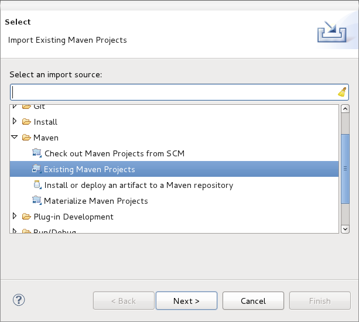
You project view should look like this
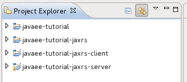
Then go to File|New|Android Project and fill out the first wizard page like this
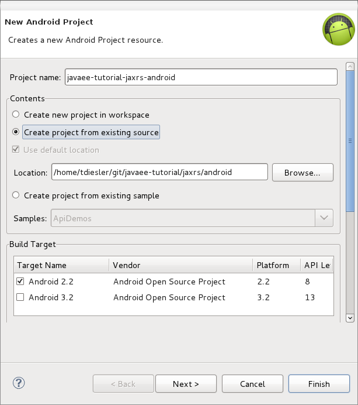
Click Finish. Next, go to Project|Properties|Build Path|Libraries and add these external libraries to your android project.
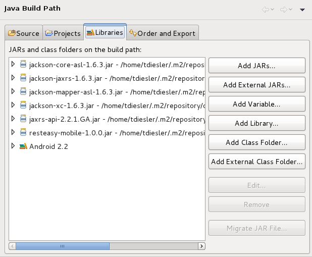
You final project view should look like this
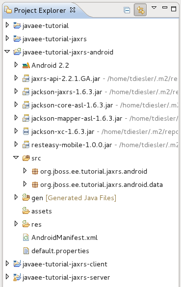
To run the application in the emulator, we need an Android Virtual Device (AVD). Go to Window|Android SDK and AVD Manager and create a new AVD like this
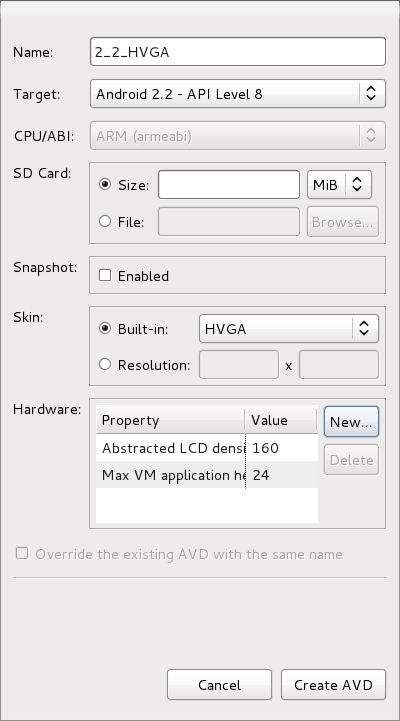
Now go to Run|Configuration to create a new run configuration for the client app.
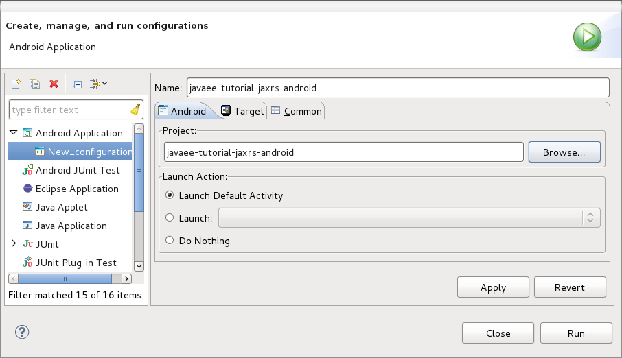
Now you should be able to launch the application in the debugger. Right click on the javaee-tutorial-jaxrs-android project and select Debug As|Android Application. This should launch the emulator, which now goes though a series of boot screens until it eventually displays the Android home screen. This will take a minute or two if you do this for the first time.
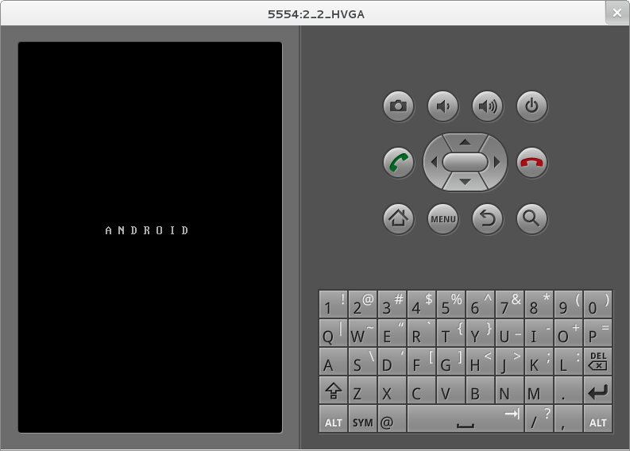
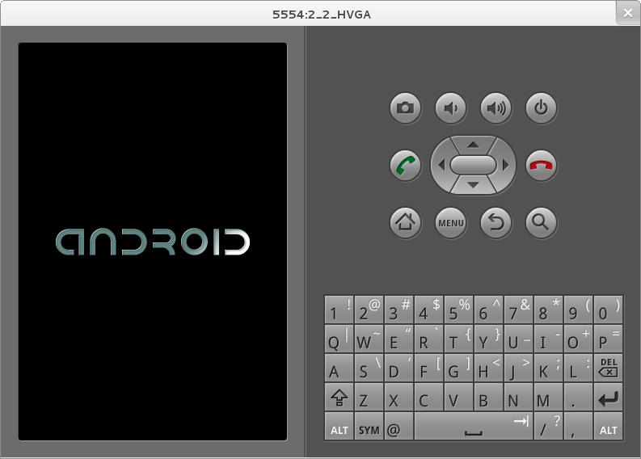
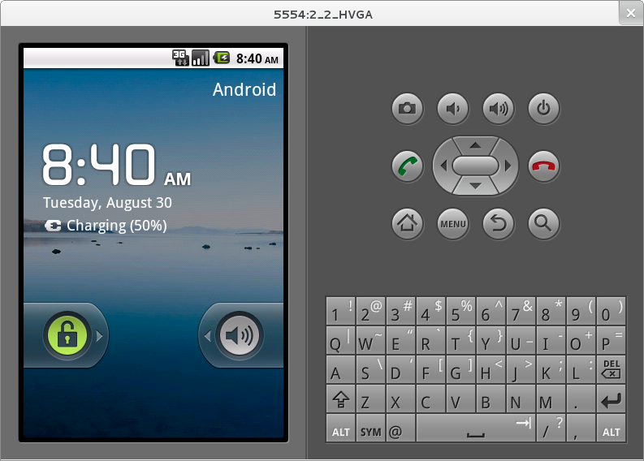
When you unlock the home screen by dragging the little green lock to the right. You should see the the running JAX-RS client application.
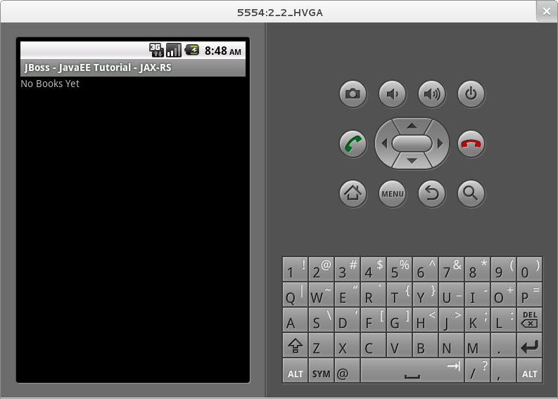
Finally, you need to configure the host that the client app connects to. This would be the same as you used above to curl the library list. In the emulator click Menu|Host Settings and enter the host address of your OpenShift application.
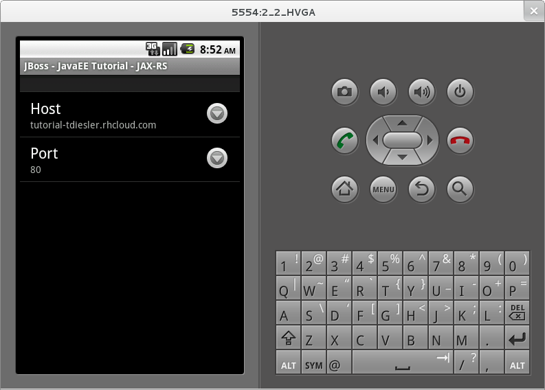
When going back to the application using the little back arrow next to Menu, you should see a list of books.
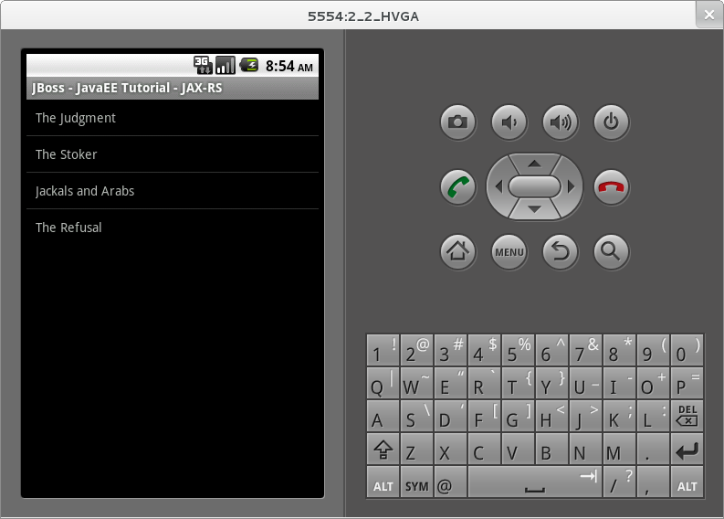
You can now add, edit and delete books and switch between your browser and the emulator to verify that the client app is not cheating and that the books are in fact in the cloud on your JBossAS 7 instance.
In Eclipse you can go to the Debug perspective and click on the little Android robot in the lower right corner. This will display the LogCat view, which should display log output from that Android system as well as from this client app
08-30 09:05:46.180: INFO/JaxrsSample(269): removeBook: Book [isbn=1234, title=1234] 08-30 09:05:46.210: INFO/JaxrsSample(269): requestURI: http://tutorial-tdiesler.rhcloud.com:80/jaxrs-sample/library 08-30 09:05:46.860: INFO/global(269): Default buffer size used in BufferedInputStream constructor. It would be better to be explicit if an 8k buffer is required. 08-30 09:05:46.920: INFO/JaxrsSample(269): getBooks: [Book [isbn=001, title=The Judgment], Book [isbn=002, title=The Stoker], Book [isbn=003, title=Jackals and Arabs], Book [isbn=004, title=The Refusal]]
There is a lot to writing high quality mobile applications. The goal of this little application is to get you started with JBossAS 7 / Android integration. There is also a portable approach to writing mobile applications. A popular one would be through PhoneGap. With PhoneGap you write your application in HTML+CSS+Java Script. It then runs in the browser of your mobile device. Naturally, not the full set of mobile platform APIs would be available through this approach.
The JAX-RS client application uses an annotated library client interface
@Consumes({ "application/json" })
@Produces({ "application/json" })
public interface LibraryClient {
@GET
@Path("/books")
public List<Book> getBooks();
@GET
@Path("/book/{isbn}")
public Book getBook(@PathParam("isbn") String id);
@PUT
@Path("/book/{isbn}")
public Book addBook(@PathParam("isbn") String id, @QueryParam("title") String title);
@POST
@Path("/book/{isbn}")
public Book updateBook(@PathParam("isbn") String id, String title);
@DELETE
@Path("/book/{isbn}")
public Book removeBook(@PathParam("isbn") String id);
}
There are two implementations of this interface available.
LibraryHttpclient
LibraryResteasyClient
The first uses APIs that are available in the Android SDK natively. The code is much more involved, but there would be no need to add external libraries (i.e. resteasy, jackson, etc). The effect is that the total size of the application is considerably smaller in size (i.e. 40k)
@Override
public List<Book> getBooks() {
List<Book> result = new ArrayList<Book>();
String content = get("books");
Log.d(LOG_TAG, "Result content:" + content);
if (content != null) {
try {
JSONTokener tokener = new JSONTokener(content);
JSONArray array = (JSONArray) tokener.nextValue();
for (int i = 0; i < array.length(); i++) {
JSONObject obj = array.getJSONObject(i);
String title = obj.getString("title");
String isbn = obj.getString("isbn");
result.add(new Book(isbn, title));
}
} catch (JSONException ex) {
ex.printStackTrace();
}
}
Log.i(LOG_TAG, "getBooks: " + result);
return result;
}
private String get(String path) {
try {
HttpGet request = new HttpGet(getRequestURI(path));
HttpResponse res = httpClient.execute(request);
String content = EntityUtils.toString(res.getEntity());
return content;
} catch (Exception ex) {
ex.printStackTrace();
return null;
}
}
The second implementation uses the fabulous RESTEasy client proxy to interact with the JAX-RS endpoint. The details of Http connectivity and JSON data binding is transparently handled by RESTEasy. The total size of the application is considerably bigger in size (i.e. 400k)
@Override
public List<Book> getBooks() {
List<Book> result = new ArrayList<Book>();
try {
result = getLibraryClient().getBooks();
} catch (RuntimeException ex) {
ex.printStackTrace();
}
Log.i(LOG_TAG, "getBooks: " + result);
return result;
}
Stay tuned for an update on a much more optimized version of the RESTEasy mobile client. Feasible is also a RESTEasy JavaScript library that would enable the portable PhoneGap approach.